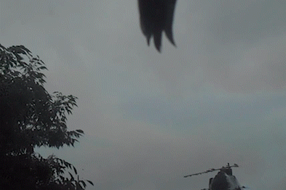

Look to see. As if it was obvious
Through like poorly drawn circles,
what percolates this will seep
into the flate edges and straight lines of the page.
Along corners and still, despite tensed moiré. Crowding
throughlines, belonging here, it is best once it is yours.
Landing in the great many and the very few,
complete with a beginning and an end.
So that you may return again
and find things to be much the same,
rocking back and forth,
soothing as that is.
So that what is here now swells -
knocking the mind shut.
Into a strange together.
